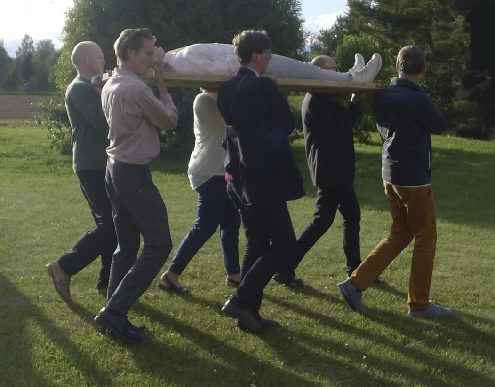
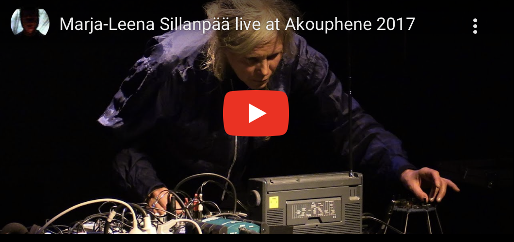

MARJA-LEENA SILLANPÄÄ
Marja-Leena Sillanpää travaille en réponse directe aux environnements, en utilisant différents matériaux et objets électroniques pour construire des situations complexes qui tendent à établir le contact avec un passé possible et un avenir potentiel, un travail qui matérialise des présences multiples dans ces lieux où nous ne sommes jamais totalement seuls. Ses travaux, concerts, performances, sculptures, objets, peu importe, vont du point le plus haut au plus bas, des châteaux de royaumes déchus aux huttes infernales.

